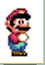

Conhece o Mario?
gif.gif)
Mario é um personagem fictício da franquia e série de jogos eletrônicos Mario da Nintendo, criado pelo desenvolvedor e designer de jogos eletrônicos japonês Shigeru Miyamoto. Servindo como mascote da Nintendo e protagonista homônimo da série, Mario já apareceu em mais de 200 jogos desde sua criação.Os jogos da série Super Mario são normalmente ambientados no mundo fictício Mushroom Kingdom, com Mario sendo o personagem jogável. Muitas vezes ele é acompanhado por seu irmão, Luigi, e ocasionalmente por outros membros do elenco de Mario. Como um jogo de plataforma, o jogador pode correr e saltar através de plataformas e sobre inimigos em fases temáticas. Os jogos possuem enredos simples, normalmente com Mario resgatando a Princesa Peach, sequestrada do antagonista principal, Bowser. O primeiro jogo da série, Super Mario Bros., lançado para o Nintendo Entertainment System (NES) em 1985, estabeleceu os principais conceitos e elementos de jogabilidade da franquia. Isso inclui uma infinidade de power-ups e itens que dão a Mario poderes especiais, como lançar bolas de fogo e mudar de tamanho
Apesar de, originalmente, aparecer apenas em jogos de plataforma, começando com Donkey Kong, Mario constantemente aparece em variados gêneros de jogos eletrônicos como corrida, puzzles, party, role-playing, luta e desportos. A série Super Mario faz parte da grande franquia Mario, que inclui outros gêneros de jogos eletrônicos e mídias, como cinema, televisão, mídia impressa e mercadorias. Mais de 380 milhões de cópias de títulos Super Mario foram vendidas em todo o mundo, tornando-o a quarta série de jogos eletrônicos mais vendida.
Mario é retratado como um encanador italiano baixinho rechonchudo e bigodudo vindo do Brooklyn que reside no Reino dos Cogumelos. Ele repetidamente tem a missão de resgatar a Princesa Peach, do vilão Bowser e impedir seus diversos planos de destruir e dominar o reino. Mario também tem outros inimigos ou rivais, incluindo Donkey Kong e Wario. Desde 1995, Mario é dublado por Charles Martinet. Super Mario Bros., o primeiro jogo de plataforma 2D de rolagem lateral a apresentar Mario, foi derivado da colaboração de Shigeru Miyamoto e Takashi Tezuka, ambos da Nintendo, como sucessor do jogo de arcade de 1983 Mario Bros., que estrelava dois personagens: Mario, o personagem principal que apareceu pela primeira vez em Donkey Kong como o personagem jogável original.
Como mascote da Nintendo, Mario é o personagem mais famoso da história dos videogames e a sua imagem está sempre associada a seus jogos. Até os dias de hoje, os jogos estrelados pelo personagem já venderam mais de 520 milhões de unidades no mundo inteiro, superando facilmente seus rivais diretos, Sonic the Hedgehog e Crash Bandicoot. No início dos anos 1990, o diretor e produtor Shigeru Miyamoto concebeu um design de um Mario em 3D durante o desenvolvimento do jogo Star Fox (1993) do Super Nintendo Entertainment System (SNES). Ele considerou usar o chip Super FX para desenvolver um jogo de SNES, Super Mario FX, com jogabilidade baseada em "um mundo inteiro em miniatura, como trens em miniatura". Ele acabou reformulando a ideia para o Nintendo 64, não por seu poder substancialmente maior, mas porque seu controle possui mais botões para o jogo. Super Mario 64 foi desenvolvido ao longo de aproximadamente três anos, com um ano gasto no conceito de design e aproximadamente dois anos na produção.
Conceito e Criação
Em 1981, Ikegami Tsushinki estava desenvolvendo, a serviço da Nintendo, o jogo Popeye. O jogo foi escrito, mas logo depois a Nintendo perdeu os direitos do personagem Popeye. Shigeru Miyamoto foi então solicitado para projetar um novo jogo baseado em suas próprias ideias. O resultado foi Donkey Kong, estrelando um personagem substituto de Popeye chamado "Jumpman" (que basicamente pulava de nível em nível, daí o nome) que tentava resgatar a namorada Pauline (substituta de Olívia Palito), do gorila Donkey Kong (substituto de Brutus). Mais tarde, alguém da Nintendo notou que Jumpman tinha uma impressionante semelhança com Mario Segale, o senhorio italiano do escritório da Nintendo em Nova York. Foi o que bastou para se alterar o nome Jumpman para "Mario". O próximo jogo de Miyamoto, Donkey Kong Jr., estreou o nome "Mario". Este jogo também é o único a trazer Mario como um vilão (o filho de Donkey Kong o caçava). Originalmente um carpinteiro, Mario logo passou a ser considerado um encanador (pelas tubulações do jogo Mario Bros.) e depois herói (pelos jogos Super Mario Bros. 1, 2 e 3).
Personalidade
Mario é retratado como corajoso, destemido, Valente, aventureiro e heróico, pois qualquer ameaça que houver no Reino dos Cogumelos, lá está Mario para salvar o dia. Ele adora enfrentar riscos, pois gosta de se aventurar e nunca desistiu. Mario tem um amor pela comida italiana. Vive comendo pizza, espaguete, lasanha, ravióli e outros tipos de comida italiana, já que Mario não vai parar de comer até acabar tudo.

Sotaque
Mario possui dois sotaques: o sotaque do Brooklyn e o sotaque italiano. Isso faz com que Mario seja considerado tanto como um americano qualquer quanto como um italiano qualquer. Para se ver os movimentos dos braços do Mario era preciso que os braços dele fossem de cor diferente de seu corpo. Miyamoto deu ao Mario um macacão azul e uma camiseta vermelha para resolver este problema. Mario tinha a camiseta azul e macacão vermelho em Donkey Kong e Donkey Kong Jr. As cores foram trocadas para camiseta vermelha e macacão azul em Super Mario Bros. 3. Quando Super Mario Bros. foi lançado para o NES, Mario tinha seus macacões vermelhos originais, mas sua camisa era de uma cor castanha. Somente em Super Mario Bros. 3 é que Mario voltou a usar seu conjunto secundário de camisa vermelha e macacões azuis, e esse esquema de cores não se alterou desde então. No console Wii, este famoso macacão ganhou uma nova textura que o fez ter um ar de manufaturado (tecido jeans).
Aparência
Na época, era complicado conceber sprites de animação para o cabelo de Mario. Além disso, Shigeru Miyamoto assumiu, em entrevista, que acha 'desenhar cabelos' muito difícil. Devido à quantia limitada de pixels loteada pelo personagem, Mario tem um grande nariz e um bigode porque não havia recursos de console para fazer a boca do personagem se mexer enquanto falava, então pôs um narigão e um bigode para esconder a boca. As aparências de Mario foram mudando conforme cada jogo da série era lançado para os consoles de videogame da Nintendo, como por exemplo no título Super Mario World, no qual Mario foi desenhado mais corretamente (devido a uma maior quantidade de pixels) com caraterísticas físicas ainda iguais as de seu irmão, Luigi. Para se ver os movimentos dos braços do Mario era preciso que os braços dele fossem de cor diferente de seu corpo. Miyamoto deu ao Mario um macacão azul e uma camiseta vermelha para resolver este problema. Mario tinha a camiseta azul e macacão vermelho em Donkey Kong e Donkey Kong Jr. As cores foram trocadas para camiseta vermelha e macacão azul em Super Mario Bros. 3. Quando Super Mario Bros. foi lançado para o NES, Mario tinha seus macacões vermelhos originais, mas sua camisa era de uma cor castanha. Somente em Super Mario Bros. 3 é que Mario voltou a usar seu conjunto secundário de camisa vermelha e macacões azuis, e esse esquema de cores não se alterou desde então. No console Wii, este famoso macacão ganhou uma nova textura que o fez ter um ar de manufaturado (tecido jeans).
Habilidades
Mario é conhecido pela sua habilidade única de pular e esmagar seus inimigos e sendo capaz de pular de grandes alturas e distâncias frequentemente quando está percorrendo seu trajeto nos jogos, além de suas habilidades de encanamento. A partir de Super Mario 64 ele passa a adquirir uma grande força derrotando seus inimigos com socos e chutes, além de conseguir erguer o Bowser pelo rabo. Ainda nesse jogo Mario possui outra habilidade, a de esmagar os inimigos se jogando com força no chão. Fora isso ele também possui poderes ganhos a partir dos itens que ele coleta nos jogos, podendo crescer, com cogumelos e soltar bolas de fogo com flores mágicas. No entanto, em alguns jogos Mario usa o apoio de seu dinossauro Yoshi para acabar com os inimigos pelo caminho.
Força/Poderes
Mario possui muita força pelo fato dele ser treinado, ele tem vários atributos físicos como: reflexo (nos jogos de tênis) Força aprimorada (em suas aventuras de resgate a Princesa Peach), mas Mario tem muitos ataques diferenciados, como: pulo, se jogar com força no chão, socos e chutes (apenas em super Mario 64, o fato de Mario dar socos e chutes em seus inimigos não agradou muito os fãs) giro de 360 graus (eleito melhor ataque de Mario, esse ataque ganhou mais sucessos em suas aventuras no espaço, Super Mario Galaxy 1 e 2), já em outros jogos Mario possui poderes diferenciados (é o caso de Super Mario Sunshine, em que Mario possui como poder principal seu jato de água), nos jogos atuais os fãs devem se contentar com o estilo "clássico" de Mario (pular sobre seus inimigos e se jogar com força); e o caso de Super Mario 3D World onde Mario e seus amigos não possuem poderes, mas em compensação o game possui vários poderes, e sua nova roupa de gato possui um ataque.
Esse ataque ganhou mais sucessos em suas aventuras no espaço, Super Mario Galaxy 1 e 2), já em outros jogos Mario possui poderes diferenciados (é o caso de Super Mario Sunshine, em que Mario possui como poder principal seu jato de água), nos jogos atuais os fãs devem se contentar com o estilo "clássico" de Mario.
Principais Jogos
Mario apareceu em diversos jogos, tendo a sua primeira aparição no jogo de arcade Donkey Kong, lançado em 1981, quando ele ainda se chamava "Jumpman". O primeiro jogo em que ele apareceu com o seu famoso nome foi Mario Bros., junto com seu irmão Luigi, onde eles, encanadores, tinham a missão de derrotar as criaturas que saiam dos canos de esgoto. Após esse jogo, ele teve algumas aparições em jogos de NES e Famicom, até que estrelou no clássico jogo Super Mario Bros. de 1985, o jogo que levou Mario à uma aventura para resgatar a princesa Peach do malvado Bowser, o rei dos Koopas. Esse jogo teve um sucesso imediato e foram vendidas milhões de unidades mundialmente.
Em 1986, Mario aparece em Super Mario Bros.: The Lost Levels, considerado um dos jogos mais difíceis da franquia até hoje. Em 1988 foi lançada a sequela do clássico jogo para NES, chamada Super Mario Bros. 2, com diversos novos elementos, inimigos e fases para se explorar. No mesmo ano, foi lançado Super Mario Bros. 3, jogo que teve um sucesso gigantesco e considerado um dos melhores jogos do Mario até hoje. Nesse jogo, Mario ganha novas habilidades, como por exemplo a roupa de Tanooki, e também com uma estética que deu a entender que o jogo não passava de uma peça teatral. Essa teoria, que ganhou uma grande repercussão pela comunidade de fans de Mario, foi comprovada como verdadeira pelo criador do Mario, Shigeru Miyamoto. Um ano depois, teve-se o lançamento de Super Mario Land, onde ao em vez de resgatar a Princesa Peach no Reino dos Cogumélos, como nos jogos anteriores, ele resgata a Princesa Daisy em Sarasaland.
Em Outros Jogos
Mario também tem diversos spin-offs, sendo o mais famoso deles a série de corrida Mario Kart, tendo o último jogo sendo o segundo mais vendido do Nintendo Switch, o Mario Kart 8 Deluxe. Outros spin-offs famosos são: Mario Tennis, Mario Golf, Mario Party, Paper Mario, Mario & Luigi, entre outros... Mario também é um dos diversos lutadores da série de luta em plataformas e um dos maiores crossovers dos videogames, Super Smash Bros., onde Mario é um dos principais e mais importantes personagens. Ele apareceu desde o primeiro jogo da série, o Super Smash Bros. para Nintendo 64 de 1999 (apelidado de SSB, SSB64 ou Smash 64), junto com personagens como Pikachu, Link e Samus, e atualmente, em Super Smash Bros. Ultimate, faz companhia a vários personagens extremamente famosos, como Pac-Man, Ryu, Mega Man, Sonic the Hedgehog e Cloud Strife.

| Evolução do Super Mario | ||
|---|---|---|
| Ano | Imagem | |
| 1981 | ||
| 1983 | ||
| 1984 | ||
| 1985 | ||
| 1988 | ||
| 1990 |  | |
| 1996 | ||
| 2004 | ||
| 2008 | ||
| 2014 | ||